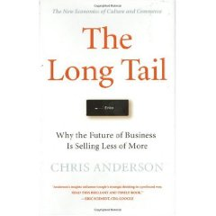
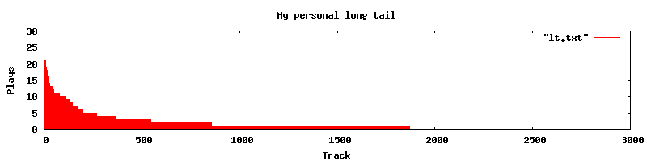
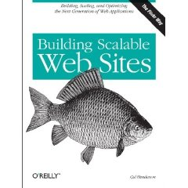
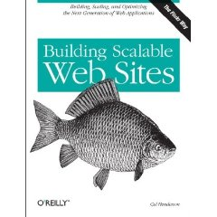

Here's another entry for the "why music similarity is so hard" notebook. Check out the band Apocalyptica - classically trained cellists from Finland that play heavy metal (what is it about Finland and metal?)
Wednesday Aug 23, 2006
Thursday Aug 17, 2006
The Google labs site is now offering an experimental Google Music Trends that tracks what is popular in music. Google Music Trends is similar to last.fm... you install a plugin for one of the popular music players, and the plugin sends data about what music you are listening to back to google, where they aggregate all of this information and then show 'top songs' charts for various genres. Unlike last.fm, they anonymize the data and only present summary information about what is popular, whereas last.fm offers the whole social music experience. Compare what Google Music Trends does to what last.fm does and it is clear that last.fm is doing this sooo much better ... but still, if I were the CEO of last.fm, I'd be feeling just a little nervous. (via MF on Liste Music-IR).
Monday Jul 31, 2006
I admit, I am no fan of shuffle play. Turn on shuffle play with a 10,000 song ipod and bad things tend to happen: my daughter's Hilary Duff track follows my son's Audioslave, leading to the dreaded iPod whiplash. My suspicion is that most people have the same experience ... that shuffle play sucks, and therefore they don't use it. But ... it turns out, I'm wrong.
A survey by Paul Doncaster finds that:
a strong majority of
iPod users surveyed (4 to 1) say they listen in shuffle mode more than
50% of the time, with half of those indicating that they listen in
shuffle mode 80-100% of the time.
People use shuffle play much more than I thought. This leads me to wonder if they do this because they like shuffle play or because making playlists is too much bother. I tend to think it is the latter.
It's an interesting survey, that is worth reading.
Saturday Jul 29, 2006

In the new book, The Long Tail, Chris Anderson explains, among other things, why music recommender systems will continue to grow in importance as the world of music moves online. Mr. Anderson says there are two rules in the new long tail world:
- Make everything available
- Help me find it.
One aspect of the long tail that is perhaps less obvious is that we have our own personal long tails. For instance, if we look at the typical iPod user, we'll see that the 80/20 rule applies: 80% of their listening is confined to 20% of the songs. (See some data in this blog entry). Plotting the song play data we see the familiar long tail power curve. For example, here's a plot of my listening behavior.

There's a long tail right there inside my iPod.
I have about 9,000 songs in my listening collection, I'm only showing the top 3,000 in this plot. This plot shows how many times I've played each song in my music collection. I've played some songs more than twenty times, but there are about 7,000 songs in my collection that I haven't listened to at all yet. This plot represents about 500 hours of listening (averaging about an hour of listening per day since I've had this iPod).
Clearly just as with Amazon and Netflix, I have my own personal long tail. There are a few personal 'hits', but there are many more songs that are rarely listened to, or not listened to at all. Now since this is all my music I know that I really like many (if not most) of those 7,000 orphans. It is just that it is so hard to listen to them. When I'm going for a walk or a drive, I don't have time to fashion a playlist, I never think ahead and make one on my Mac, so I end up gravitating to the old favorites. The builtin tools that we find for exploring our music collections (shuffle play) leaves us with iPod whiplash from listening to playlists that go from Raffi to Rammstein.
Clearly, just as recommender tools are going to be increasingly important in the for the iTunes, Amazons and Netflix of the world, recommender and playlist generation tools are going to be important in managing our personal collections. We need to get beyond the trivial shuffle play, to more intelligent ways of managing our personal collections. I want the 'play me the music that I want to listen to now' button on my iPod. Without these tools, the iPod is a place where the majority of our music goes to die, to never be heard again. Without these tools my iPod becomes my personal music graveyard.
Thursday Jul 27, 2006
According to GigaOm, Sun founder Vinod Khosla is backing GarageBand.com as they prepare to launch iLike, a social music discovery service. iLike is still in stealth mode with nothing released yet ... here's what they say about themselves:
We're working on a service to help you
organize your music, share your music tastes, and discover
new music through your friends. We don't want to say too much about it on the site, not because
we're secretive, but because we don't want to build up expectations. We prefer
to under-promise and over-deliver, so let's just say we plan on shipping new
stuff frequently, and you can decide if you like it or not.
It
will be interesting to see how they can distinguish themselves from the
rest of the pack of social music services. It seems that between
sites like MySpace, Last.fm, MusicStrands, MusicMobs and
Yahoo, the social music space keeps growing and growing. Is there
room for all of these services?
Tuesday Jul 25, 2006
The new Transporter from Slim Devices looks particularly sweet, and it only costs $2K! (including a bonus squeezebox).
MIREX 2006 has officially opened its doors for submissions.
MIREX 2006 is the second running of the Music Information Retrieval Evaluation eXchange, an annual evaluation of MIR systems. In some sense, MIREX is the TREC of the MIR world. MIREX provides a set of standard evaluations for MIR researchers to benchmark their systems, with the hope that with these evaluations we will see improvement from year to year in these systems, just as standard evaluations have helped improved the state of the art in information retrieval and speech recognition.
This year MIREX will be conducting the following evaluation tasks:
- Audio Beat Tracking
- Audio Melody Extraction
- Audio Music Similarity and Retrieval
- Audio Cover Song
- Audio Onset Detection
- Audio Tempo Extraction
- QBSH: Query-by-Singing/Humming
- Score Following
- Symbolic Melodic Similarity
Results for this years MIREX will be published during ISMIR 2006.
Monday Jul 24, 2006
So you've got a melody stuck in your head, but you can't think of the name of the song ... what do do? You may want to try the MelodyHound. With MelodyHound, if you can peck out a melody on a keyboard, whistle or sing a melody, or even just tap out its rhythm you can find the song. The MelodyHound uses data from the Musipedia which gives it a search index of over 30,000 melodies. I was able to search for 'ode to joy' by pecking the melody on the keyboard, and I was able to find 'happy birthday' as well as Clapton's 'Sunshine of your love' by tapping out the rhythm on my spacebar. (Since I am currenty sitting in the Keene NH public library, I didn't try singing to my computer). MelodyHound was developed by Rainer Typke a well known MIR researcher (he also founded the aforementioned Musipedia).
One would think that a website developed by an MIR academic would be rather staid (like this one), but this is not the case with MelodyHound. The site shows a surprising amount of polish, with all sorts of AJAXy goodness, a clean and intuitive interface with lots of info in the search results. All in all, a very well done site. The best query-by-melody, and query-by-tapping site I've seen. 5 stars
Wednesday Jul 19, 2006
There's an interesting article in MIT Tech Review: Audio Software for the Moody Listener
about a batch of research systems that allow content-based exploration
of music collections. The article mistakenly focuses on mood
as a primary factor for these systems, when in fact most of them seem
to not use mood at all. The article highlights a few systems
including AudioRadar [PDF Description] developed by the Media Informatics group at the University of Munich and Playola developed at Columbia. I particularly enjoy the Music-space browser in the Playola system.
Stephen Downie delivers the obligatory stairway reference: "You as a human will recognize 'Stairway to Heaven' played on a banjo, as opposed to the original version played at the Led Zeppelin concert, but these systems really can't get it." (Note that Stephen is in the process of organizing the MIREX 2006 Cover Song contest, where systems will be challenged to do just that ... to find the banjo version of Stairway to Heaven).
Stephen Downie delivers the obligatory stairway reference: "You as a human will recognize 'Stairway to Heaven' played on a banjo, as opposed to the original version played at the Led Zeppelin concert, but these systems really can't get it." (Note that Stephen is in the process of organizing the MIREX 2006 Cover Song contest, where systems will be challenged to do just that ... to find the banjo version of Stairway to Heaven).
Sunday Jul 16, 2006
Rhapsody's having a web mashup contest, the developer of the best web app that uses their API will win some nifty prizes.
Rhapsody has been offering the Rhapsody web services for their music subscription service for some time now. The web service gives access to the data and the music provided by rhapsody. Here's a quick summary of what you can do with this service:
- Get info on an artist - Example: http://feeds.rhapsody.com/weezer/data.xml - This includes the artist's discography, top albums, top tracks, bio info, playlists, rich genre info
- Get info on an album - Example: http://feeds.rhapsody.com/weezer/98380_weezer/data.xml - This includes detailed track info, album art, release dates
- Search for an artist, album or track: Example: http://realsearch.real.com/search?searchtype=RhapArtist&query=shinedown -This search seems to be using a pronunciation or edit distance, fuzzy string match since 'shinedown' also finds 'shakedown' and 'shi town'.
Some of the downsides:
- it is not a complete catalog (no Beatles for instance),
- There's no user usage data (It'd be great to know how popular a particular track is).
- You can only use the data for personal use, no commercial use allowed.
First seen on NetBlogsAndRocknRoll and MixedContent.
Wednesday Jul 12, 2006
In todays CNET news, Tom Jacobs of Sun Labs writes about the crazyness of the iTunes situation in France. In the article: Learning from the French iTunes Legislation Tom suggests that the compromise solution will likely end up with more bureaucracy, but will yield no improvement in interoperability. Tom points to Open Media Commons, an effort to develop royalty-free, open source DRM that will tie rights to individuals instead to devices. This will allow you to listen to all of your music on all of your devices.
Friday Jul 07, 2006
Over at the MusicBrainz blog, Mayhem indicates that Google has pledged $15,000 to support the MetaBrainz foundation. MetaBrainz is the non-profit organization behind MusicBrainz, the community music 'metadatabase'.

MusicBrainz provides all sorts of interesting data about artists, albums and tracks and provides web services APIs to access the data (or you can just download the data and create your own postgresql database).
Good for Google!
Wednesday Jul 05, 2006
It's vacation week at Sun. During vacations I like to read at
least one technical book from a completely different area from what I
know. I've always been curious about how I would go about building
a website like slashdot, digg or last.fm that has to be able to handle
millions of page hits per day. Why doesn't the 'slashdot effect'
doom slashdot? How can last.fm stream thousands of custom audio stream in a day? How can digg go from 1,000 users to 10,000,000 users in a year without collapsing under the weight of all those users?

This week, I picked up the book Building Scalable Websites in an attempt to learn about all of these things. This book is written by Cal Henderson, the engineering manager at Flickr. Since Flickr is one of the busier web 2.0 sites out there, one would guess that Cal knows what he's talking about.
This book covers a wide range of topics from how to select a 'colo', protecting yourself against SQL injection attacks, internationalization, performance monitoring, scaling MySql and so on. The book is targeted at LAMP architectures (in fact, this is a bit of advice from the book - go with proven technologies like LAMP. Skip the latest trendy language or framework, stick with stable and well-understood platforms like LAMP). I found the sections on load balancing and scaling MySql to be very interesting. These sections are at the core of building a scalable web application.
My website building experience is limited to personal home pages and small experimental projects, with a maximum hit rate of perhaps 10 page views per day. I've never even used MySql. So most of the info in this book was brand new territory for me. I found it to be a fascinating look at what it takes to build a site that can scale into the millions users. Cal writes in a clear straightforward manner, presenting the material in a very approachable, organized format. Definitely recommended for all of those Flickr wannabees out there.

This week, I picked up the book Building Scalable Websites in an attempt to learn about all of these things. This book is written by Cal Henderson, the engineering manager at Flickr. Since Flickr is one of the busier web 2.0 sites out there, one would guess that Cal knows what he's talking about.
This book covers a wide range of topics from how to select a 'colo', protecting yourself against SQL injection attacks, internationalization, performance monitoring, scaling MySql and so on. The book is targeted at LAMP architectures (in fact, this is a bit of advice from the book - go with proven technologies like LAMP. Skip the latest trendy language or framework, stick with stable and well-understood platforms like LAMP). I found the sections on load balancing and scaling MySql to be very interesting. These sections are at the core of building a scalable web application.
My website building experience is limited to personal home pages and small experimental projects, with a maximum hit rate of perhaps 10 page views per day. I've never even used MySql. So most of the info in this book was brand new territory for me. I found it to be a fascinating look at what it takes to build a site that can scale into the millions users. Cal writes in a clear straightforward manner, presenting the material in a very approachable, organized format. Definitely recommended for all of those Flickr wannabees out there.
This blog copyright 2010 by plamere

Social Tags and Music
For instance, here's a raw feed of the top 250 tags at last.fm. There are lots of genre tags (rock and alternative), as well as personal labels (seenlive, favorite), and mood tags (chill, sad) as well as qualitative tags (officially sh*t).
Last.fm offers a 'tag radio' where you can listen to music that has been tagged with a particular tag. Feel like listening to some sad songs? try this: Sad Radio (listen). Want to listen to some face shreding guitar? try: Guitar Heros (listen). And of course there is Lord of the Rings Radio - all Lotr, all of the time (listen), where you can hear Enya, Howard Shore, Led Zeppelin and Battlelore (the Finnish, epic-metal band that plays 'sons of the riddermark').
One has to be a bit careful when using these tags though, because you don't always get what you'd expect. If you listen to Love Radio (listen), you might expect to hear nothing but love songs, but of course lots of taggers use the word 'love' to tag songs that they love as opposed to tagging songs about love. So you may have a romantic ballad follows by Battlelore's Sons of the Riddermark, if someone loved that song enough to tag it as such.
The real value in the tags surfaces when many, many people have tagged songs. The personal tags like 'seen live' and 'I Own It' become noise, and with lots of tags per song, real patterns can emerge. With enough tags, we can cross the semantic gap and start searching for music with words that describe the music such as: "play me some sad love songs with a Lord of the Rings theme with great guitar solos".
Posted on: Aug 23, 2006
Posted by: plamere
Category: music
Permanent link to this entry | Comments [2] | Comments have been disabled.